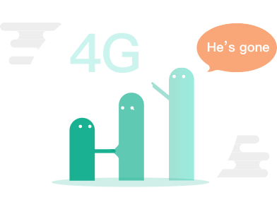

<div class="ui-badNetwork__content">
	
	<div class="ui-badNetwork__info">
		<p>网络出小差了</p>
	    <input type="button" value="刷新" class="ui-badNetwork__button" v-touch:tap="onClickTap()"></input>
	</div>
</div>